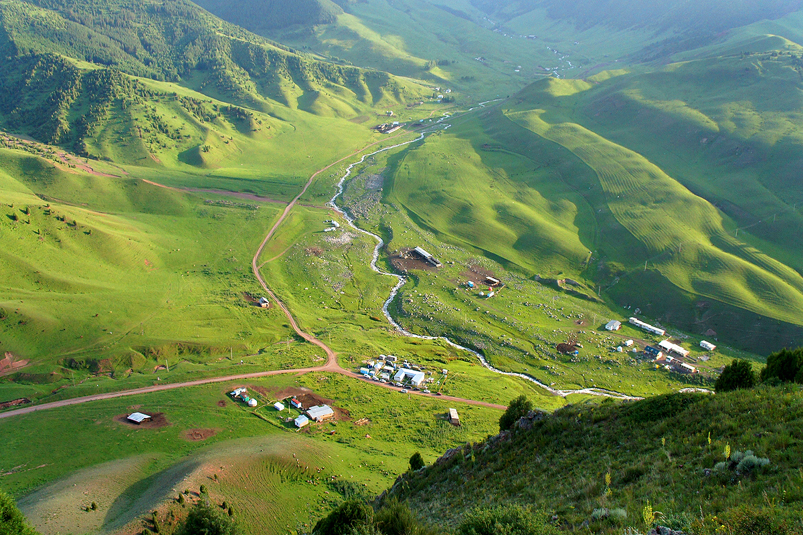

This high-mountain gorge is located 45 kilometers from Bishkek and is suitable for almost all types of tourism. The road along the gorge is favored by cyclists, 4 ski bases will suit ski and snowboard lovers, there are also places for picnics and walks.
The gorge is famous for its royal tulips, which reach 17 centimeters in height. There is also a majestic forty-meter high Pigeon Falls, located among sharp high rocks, which makes tourists return here again and again.
You can tickle your nerves by walking across a bridge called "skybridge". Suspended rope bridge is located almost 100 meters from the ground, in length reaches 90 meters. Many people like to take pictures here.
In summer, guests can have koumiss treatment here. Horse milk cures stomach, liver, intestinal and skin diseases. It is also recommended for expectant mothers and women who are just planning pregnancy. Koumiss contains an important vitamin - folic acid. Its deficiency leads to defects in the neural tube of the fetus. By taking just 250 milliliters of horse milk a day, a future mother can avoid complications.